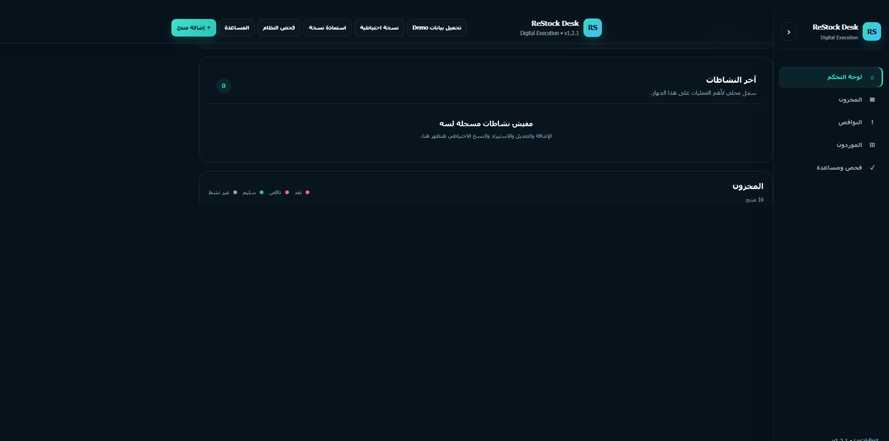
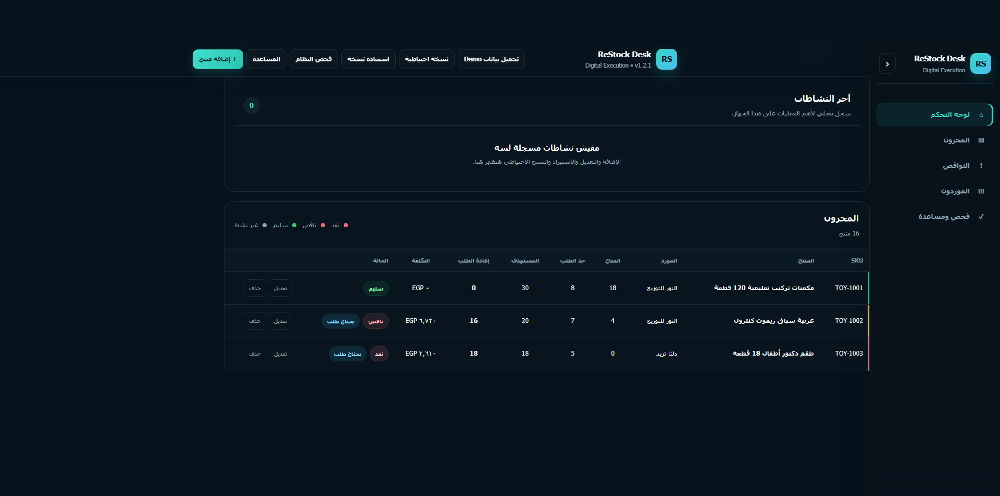
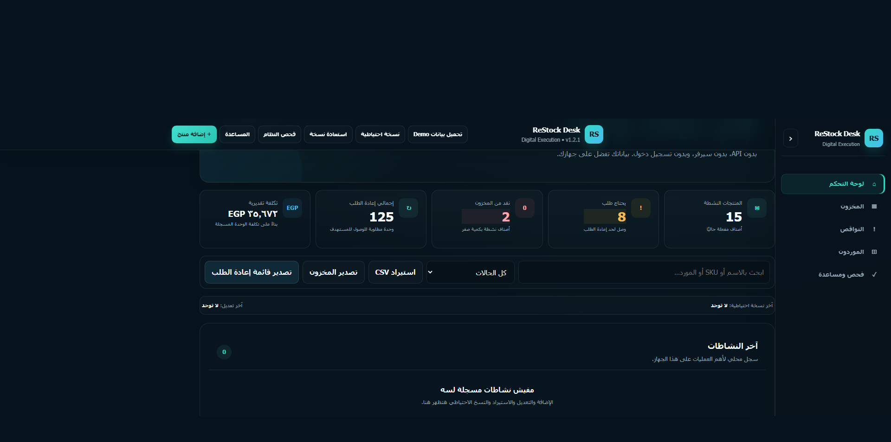

كشف النواقص
يحدد الأصناف التي وصلت لحد إعادة الطلب.
ReStock Desk يساعدك تحدّث الكميات من الموبايل، تعرف الأصناف اللي محتاجة إعادة طلب، وتجمع احتياجات كل مورد في مكان واحد.
النسخة العامة Demo محدودة للتجربة. النسخة التجارية الكاملة تُسلَّم بعد الدفع.

لقطات مباشرة من الإصدار التجاري v1.2.2 بدون إعادة رسم للواجهة.



سيظهر هنا فيديو YouTube أو MP4 مع صورة Poster عند نشره.
سيتم نشر آراء أول العملاء هنا بعد الإطلاق التجاري.
يحدد الأصناف التي وصلت لحد إعادة الطلب.
يحسب كمية الطلب حتى الوصول للمخزون المستهدف.
يعرض تكلفة تقريبية لإعادة الطلب.
يجمع احتياجات كل مورد في مكان واحد.
استيراد المنتجات وتصدير المخزون وقائمة إعادة الطلب بسهولة.
نسخة احتياطية واستعادة كاملة للبيانات.
استخدم النسخة التجريبية على الموبايل عشان تجرب تحديث الكميات والنواقص والموردين. النسخة التجارية الكاملة الحالية تُسلَّم كحزمة وتعمل محليًا على الكمبيوتر.
المنتج مصمم للاستخدام الذاتي، ولا يشمل تركيبًا عن بُعد أو تخصيصًا أو دعمًا فنيًا فرديًا.
داخله دليل استخدام، فحص ذاتي، Demo Data، Backup/Restore، وحلول للمشاكل الشائعة.
النسخة الحالية تخزن البيانات داخل المتصفح، لذلك يُنصح بعمل Backup دوري.
استلم ReStock Desk v1.2.2 مع النسخة التجارية الكاملة، قالب CSV للاستيراد، دليل الاستخدام، النسخ الاحتياطي والاستعادة، وترخيص الاستخدام الداخلي.
النسخة العامة للتجربة فقط ولا تشمل خصائص النسخة التجارية الكاملة.
طريقة الاستلام: بعد التحويل أرسل صورة أو رقم العملية على واتساب. بعد مراجعة الدفع تستلم رابط تحميل النسخة التجارية v1.2.2 مباشرة.
لن نطلب PIN أو OTP الخاص بمحفظتك. احتفظ بنسخة من ملف المنتج بعد التحميل.
الـDemo تسمح لك بتجربة البحث والفلاتر وتحديث الكميات والنواقص والموردين. النسخة التجارية تضيف إدارة المنتجات والاستيراد والتصدير والنسخ الاحتياطي والاستعادة.
لا. تقدر تستخدمه من المتصفح مباشرة، وعلى الموبايل تقدر تثبته كتطبيق PWA من Chrome.
النسخة العامة Demo تعمل على الموبايل ويمكن تثبيتها كتطبيق. النسخة التجارية الكاملة الحالية تُسلَّم كحزمة وتعمل محليًا على الكمبيوتر.
لا.
المنتج Self-Service ولا يشمل دعمًا فرديًا.
لا. الشراء يمنح حق الاستخدام فقط حسب الترخيص.